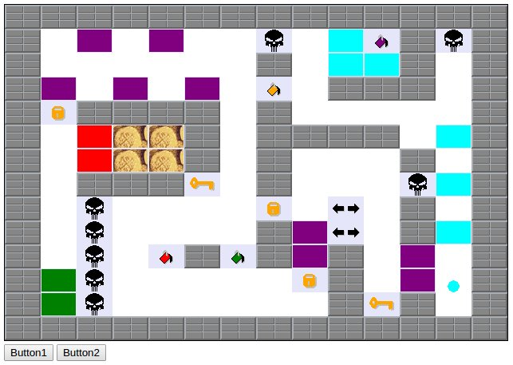

Linguagens e Ambientes de Programação (2014/2015) [Eng.Inf. - DI/FCT/UNL]
Enunciado do 3º Projeto Prático (JavaScript)
Datas
- 22/Maio (21:00) - Divulgação deste enunciado.
- 31/Maio (21:00) - Data recomendada de entrega.
- 07/Junho (21:00) - Data limite de entrega sem penalização. (Repare que o prazo foi extendido uma semana) (... e foi extendido ainda mais um dia).
- 09/Junho (21:00) - Data e hora limite de entrega com atraso. Dois valores de penalização por cada dia de atraso.
Changelog
- 03/Junho (15:00) - O prazo de entrega foi adiado 24 horas, para domingo.
- 30/Maio (23:00) - Foram adicionadas, logo no início do enunciado, as regras de submissão. Estas regras envolvem dois concursos do Mooshak: "concurso de teste" e "concurso para submissão final".
- 23/Maio (18:00) - No código oferecido, alterou-se a definição do método "collision" para ele poder ser escrito do ponto de vista da bola. Assim fica mais fácil de escrever código extensível.
- 23/Maio (18:00) - No código oferecido, trocou-se em todo o lado a palavra "Inversor" por "Inverter".
- 23/Maio (14:00) - No código oferecido, corrigiu-se o método "getColor" da classe Actor.
- 23/Maio (14:00) - No código oferecido, trocou-se em todo o lado a palavra "Danger" por "Devil".
- 23/Maio (14:00) - Foram adicionadas as secções "Actors", "The HTML form" e "Unspecified parts of the program".
- 22/Maio - Possíveis correções ou melhorias deste enunciado serão assinaladas aqui.
Please, develop this JavaScript/HTML program in a object-oriented style. Organize your program as a decentralized community of autonomous objects that interact through messages. Furthermore, factorize your classes and write extensible code: think that in the future, we may want to add new kinds of actors as easily as possible. One challenge for you is to discover how to write a program involving multiple entities interacting in different ways, without compromising the extensibility of the code (cf. lecture 22.)
This project consists in the implementation of a game to run in a Web page. You will need to create an HTML form containing a large canvas plus some more elements like buttons and text boxes. The game runs inside the canvas. The elements surrounding the canvas allow the user to act over the game (e.g. a "Start Level" button to starts the game at a particular level), and to display information about the game (e.g. the current time, the number os remaining lives, the current level, the inventory, etc.).
We offer you, as a starting point for your work, these two files: Gold.html and Gold.js. There is also the file Gold0.js that you must use but not change. The HTML file already includes the two JavaScript files.
The code available in the files "Gold0.js" and "Gold.js" already provides everything you will need to deal with graphics, keyboard and animation events.
As for the file "Gold.html", the HTML form we offer is just a sketch that you should improve to create an useful interface.

Gold!!!
"Gold !!!" It is a simple game that combines real-time action with strategy.
Our hero is a Bouncing Ball that moves on the screen continually, up and down. In addition to the Ball, there are various types of fixed actors that do not move: Boundary blocks, Colored bricks, Buckets of paint, Keys, Locks, Devils (evil beings), Inverters, and Gold pieces. The player only controls the horizontal component of the movement of the Ball. The vertical component is automatic.
At each level of the game, there are two different goals that you must be achieved in succession. The first is to capture all the Colored bricks. Only after that, you can begin to capture the Gold pieces.
You capture an actor by making the Ball collide with it, but this only succeeds under certain conditions. For example, to capture a Colored brick, we must first ensure that the Ball has the same color of the brick; you can change the color of the Ball by making it collide with a Bucket of paint with the right color.
An interesting aspect is the fact that there are areas of the screen protected by Locks. To open a Lock you must first capture a Key. But the color of the Keys are orange, so you must first change to orange before you can catch the Key.
Usually you try to avoid colliding with an Inverter because it reverses the roles of the left and right keyboard controls, making it hard for you to control the Ball. You need to catch a second Inverter to restore normal operation.
Finally, beware of the deadly Devils! This type of actor was invented to make your life miserable.
Goal and scores
At each level, the goal of the game is to take all the bricks and, after that, to take all the gold. This should be done as quick as possible, to maximize the final score. Each type of captured actor worth a number of points.
A Ball starts with 3 lives. When you complete a level, you pass to the next level.
The player has at his disposal the maximum time of two minutes to complete each level. You lose a life if you can not complete the level within the time limit. On the other hand, there is a bonus for every second not used.
The score is determined as follows:
- Brick - 2 point.
- Key or Lock - 4 points.
- Gold piece - 6 points.
- Unused time bonus - 1 point for every unused second from the time limit.
- Unused lives bonus - 200 point for every unused live, in case you reach the end of the last level.
The Ball gains an extra life for every 200 points earned.
Losing a live
The Ball can lose a life for two reasons: because it collides with a Devil or because of the two minutes time limit has been reached.
When the Ball loses its last life, the game ends.
But if the Ball has still some lives available, the game resumes at the same level and state in which the loss of life occurred. This also means that the screen remains the same, the Ball keeps it inventory of caught objects in the current level, and the Ball keeps its points accumulated since the beginning of the game. The only things that changes is that the Ball reappears in the initial location (at the bottom of the screen near the right), with the initial color (light blue) and with two fresh minutes available.
Keyboard
The Bouncing Ball is controlled using the following keyboard keys:
- 'O','Q','<-' - Ball to the left.
- 'P','W','->' - Ball to the right.
The world
The world in which the game takes place is a rectangle of 14 x 14 places. The Ball appear in the screen as a colored circle with diameter 15 pixels. The rest of actors are rectangular with dimensions 45 x 30 pixels.
There are 5 different world maps in the file "Gold0.js". When the program starts, the map of the level 1 is loaded and the game begins.
Each map has a boundary of blocks that ensure that the Ball never escapes from the game rectangle.
Actors
In this section we present all the types of actors and describe their behavior.
Bouncing Ball
The Ball begins at a fixed position near the bottom right of the picture.
At the beginning of each level, the Ball is light blue. Since there are no Buckets of this color, the Ball needs to capture all the light blue bricks before changing its color for the first time. The Ball changes its color by colliding with a Bucket of paint with the desired color.
When the Ball collides with another actor, it always bounces back, no matter if there is a catch or not.
Boundary blocks
These are indestructible obstacles, which can not be captured by Ball.
Colored bricks
The Bouncing Ball captures a Brick if, at the time of the collision, both have the same color. In this case, the Brick disappears from the screen, and the score of the Ball is incremented.
Buckets of paint
If the Ball hits a Bucket, the Ball takes the color of the Bucket. The Bucket is not destroyed and remains in the scenario.
Keys
The Ball captures a Key if, at the time of the collision, (1) the Ball is orange and (2) does not own any Key yet. In this case, the Key disappears from the screen, the Ball adds the Key to its inventory, and the score of the Ball is incremented.
Locks
The Ball captures a Lock if, at the time of the collision, (1) the Ball is orange and (2) has a Key stored. In this case, the Lock disappears from the screen, the Key is removed from the inventory of the Ball, and the score of the Ball is incremented.
Devils
The Ball dies by colliding with a Devil. The Devil is not destroyed and remains in the scenario. The Ball loses a life.
Inverters
When the Ball collides with an Inverter, the roles of the keyboard controls "left" and "right" is exchanged and this complicates the control of the Ball. The Inverter disappears from the scene, being captured by Ball. If the Ball already has an Inverter then the two Inverters cancels out mutually and no Inverter remains in the inventory..
Gold pieces
The Ball captures a Gold piece if, at the time of the collision, the Ball has already caught all Colored bricks. In this case, the Gold piece disappears from the scene and the score of the Ball is incremented. The color of the Ball is not relevant at the time of capturing gold.
The HTML form
Please, be ambitions in the implementation of the HTML form that contains the game canvas. You should be ambitions concerning both, the number of elements and aesthetics. Your only limit is your imagination.
You must include buttons that act over the game, allowing the user to start the game at some level, to change the speed, to pause the game, and so on.
You must also include data fiels showing many aspects of the internal state of the game: current level, current time in seconds, remaining lives, current speed, remaining bricks to be catched, remaining gold pieces to be catched, total number of colisions, and so on.
Around 20% of the grade will be related to the HTML form.
There is useful information about HTML forms and Web pages in the text of the lecture 19. Note also that a new example has just been added to the end of that text.
Unspecified parts of the program
You must respect the rules of the game and everything that is written in this document.
However, there are some program details are not specified.
For example, this document does not say what happens when a game level finishes or the entire game ends. Nevertheless, you should make the program nice, intuitive and convenient to use.
The contents of the HTML form is not specified.
Do you want to add some extra feature to the game? We do not recommend this because you need time to the other courses. However, if you must, then make that extra feature require explicit activation using a button in the HTML form. This way, the grading process will not be disturbed.
Regras principais
- Você tem de produzir dois ficheiros: "Gold.html" e "Gold.js". Nas regras de submissão será explicada a forma de submeter no Mooshak.
- O ficheiro "Gold.html" tem de incluir logo nas primeiras linhas, um comentário inicial contendo: o nome e número dos dois alunos que realizaram o projeto; indicação de quais as partes do trabalho que foram feitas e das que não foram feitas (para facilitar uma correção sem enganos); ainda possivelmente alertando para alguns aspetos da implementação que possam ser menos óbvios para o avaliador.
- O projeto é para ser realizado por grupos de dois alunos. Um projeto entregue por três ou mais alunos vale zero valores. Poderão ser permitidos grupos de 1 aluno em circunstâncias especiais que têm de ser bem explicadas no comentário inicial atrás referido.
- A versão final do seu programa deverá correr no JavaScript Rhino e browser Firefox que estão instalados no sistema Linux dos laboratórios. Faça essa verificação, pois é nesse contexto que a correção do projeto será efetuada. No entanto o código oferecido também corre no Chrome, usando o Node.js.
- O programa deve ser bem indentado, por forma a ficar bem legível. A largura do programa não deve exceder as 80 colunas para poderem ser impressos. Podem haver algumas exceções, muito pontuais.
- O não cumprimento das regras anteriores implica penalizações automáticas na nota.
Outras regras
- Apesar de o projeto ser de grupo, cada aluno, a título individual, tem a responsabilidade de responder por todo o projeto. Assim é indispensável que os dois membros de cada grupo programem efetivamente.
- Não se proíbe que alunos de turnos práticos diferentes façam grupo. Isso é apenas desaconselhado.
- Não terá lugar qualquer pré-inscrição dos grupos. Basta que nos trabalhos submetidos figurem nomes de alunos inscritos na cadeira.
- A nota máxima do projeto é 20 valores.
Observações
- Os diferentes grupos são incentivados a discutir entre si os detalhes da realização do projeto (inclusivamente no fórum). Mas sempre que chega o momento de escrever código concreto, esse tem de ser um esforço interno a cada grupo. A escrita de código exige esforço intelectual, mas só com esforço se consegue evoluir.
- O objetivo deste projeto é levar os alunos a praticar. Um aluno que pratique de forma genuína ganha experiência e provavelmente não terá dificuldade em conseguir aprovação nos testes ou no exame final.
- Cuidado com as fraudes: Cada grupo é responsável pelo seu projeto e não pode deixar que o seu código seja lido por nenhum outro grupo. Quem dá acesso ao seu próprio código é o principal responsável da fraude e fica logo excluído da cadeira. Quanto ao outro grupo, o que copia, também é excluído da cadeira. Note que nem sempre as fraudes são causadas intencionalmente: por exemplo, basta o desleixo de deixar uma solução meio feita esquecida numa área aberta duma máquina pública, ou algo do género. Note que é muito melhor ter uma nota muito baixa no primeiro projeto, do que ser logo excluído da cadeira por motivo de fraude.
Avaliação
Os docentes responsáveis pela gestão e pela avaliação deste trabalho são Artur Miguel Dias e Luís Carvalho.
A maior parte da nota será determinada de forma muito objetiva, testando o programa à mão e confirmando quais as funcionalidades implementadas.
Na parte mais subjetiva da apreciação da qualidade dos trabalhos serão tidos em conta aspetos, tais como:
- organização,
- clareza e simplicidade das ideias programadas,
- bom uso da linguagem,
- legibilidade do código,
- qualidade da página Web criada.
Situação especial - Programa escrito num estilo orientado pelos objetos, mas viola as regras da aula teórica 22 que ensinam a fazer programas estensíveis. A nota máxima que é possível obter é 15 valores.
Final
Bom trabalho! Esperamos que goste.